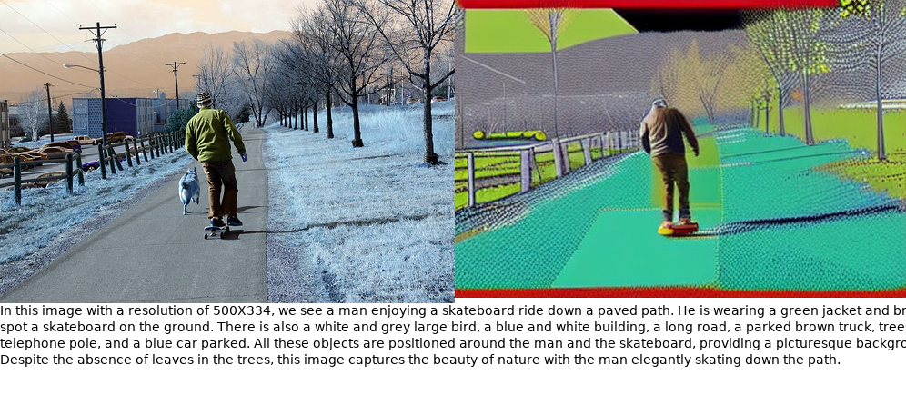
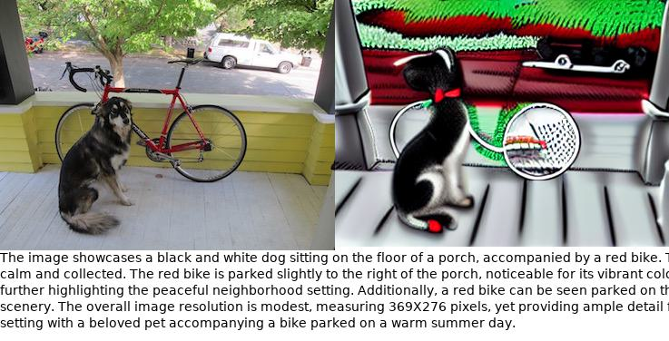
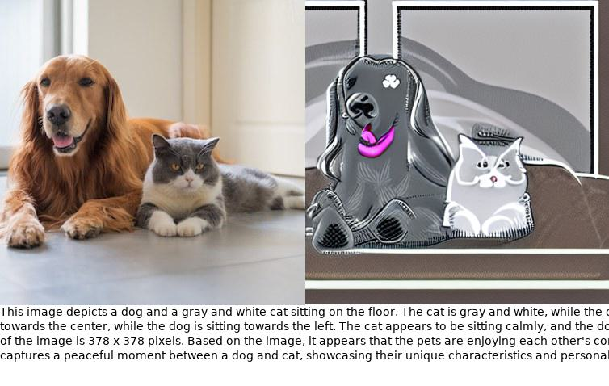
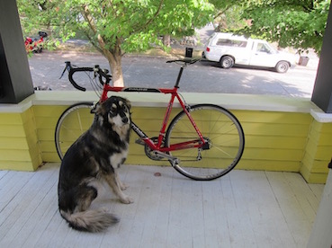
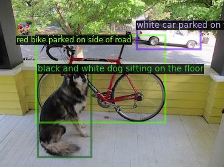
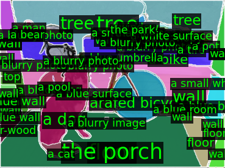

|  | A dog sitting on a porch with a bike. |  |  |
| Input | BLIP2 Image Caption | GRIT Dense Caption | Semantic Segment Anything |
This image depicts a black and white dog sitting on a porch beside a red bike. The dense caption mentions other objects in the scene,
such as a white car parked on the street and a red bike parked on the side of the road. The region semantic provides more specific information,
including the porch, floor, wall, and trees. The dog can be seen sitting on the floor beside the bike, and there is also a parked bicycle and tree in the background. The wall is visible on one side of the image, while the street and trees can be seen in the other direction.
| Method | Trainable Parameter | Running Time | IR@1 | TR@1 |
|---|---|---|---|---|
| Image-text | 230M | 9H | 43.8 | 33.2 |
| Generated Paragraph-text | 0 | 5m | 49.7 | 36.1 |
If you have more suggestions or functions need to be implemented in this codebase, feel free to drop me an email awinyimg dot gmail dot com or open an issue.
This work is based on ChatGPT, Edit_Anything, BLIP2, GRIT, OFA,Segment-Anything, Semantic-Segment-Anything, ControlNet.